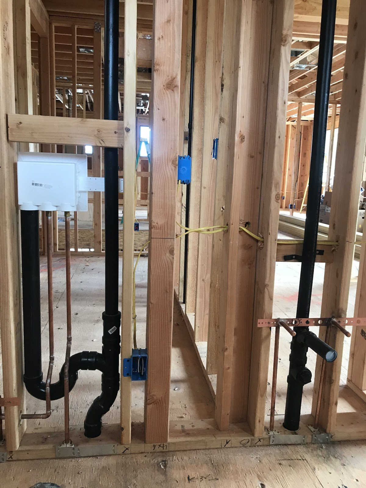
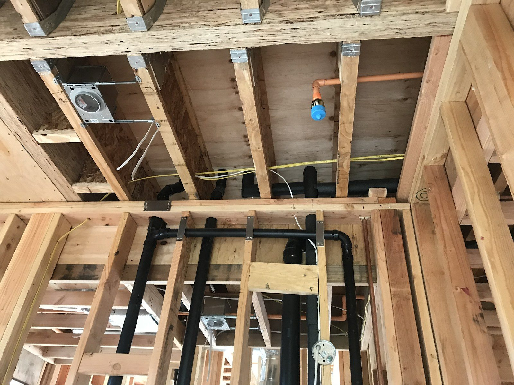
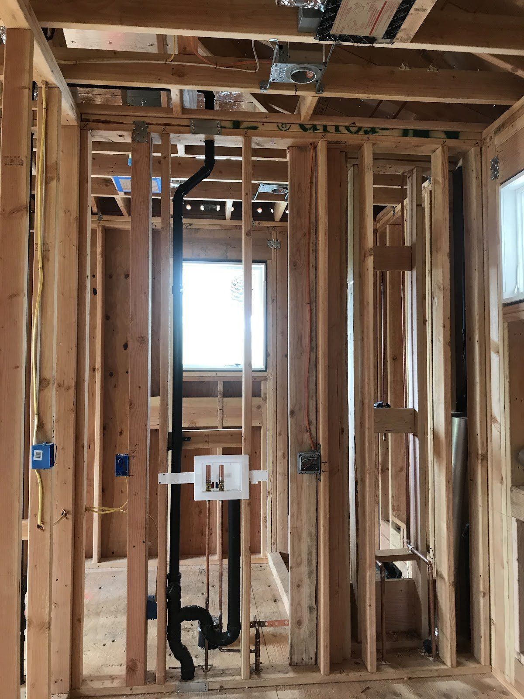

Sheet A-0 Plumbing & drain rooter · Castro Valley, CA 94546
Every drain.Every line.
Clogged drains cleared with a rooter, drain and vent lines, copper supply runs, and the rough-in plumbing inside the walls of new builds and remodels. Around Castro Valley and the East Bay hills.
A-1 AtlasA-2 Rough-inA-3 Drain checkA-4 Castro ValleyA-5 RequestScale: one house · Drawn for 94546
Sheet A-1 The atlas
One house, five points.
Every job Baek's does sits somewhere on this drawing of a house's drains and water lines. Tap a numbered point, or a line in the legend, to see it.



Point 01 drawing
Drain cleaning & rooter
Clearing clogged and slow drains with a rooter cable, from one sink to the main line out to the street. You need it when water drains slowly, backs up or gurgles.
On the drawing: the cleanout by the street.
Section B-B Ceiling, mid-build
Before the walls close up.
Most of a house's plumbing is never seen again once the drywall goes on. This is the stage where the lines are set: drains sloped to flow, vents to the roof, copper to every fixture. Their photo.
Sheet A-2 Rough-in plates
Inside the walls, before the drywall.
Three walls from their own jobs, photographed at rough-in. Tap a plate to open it larger.
Plate 02 Laundry wall: outlet box and drain. Their photoPlate 03 Stacks, trap arm and copper stub-outs. Their photoPlate 04 Bath wall: drain, vent and supply. Their photo
Sheet A-3 Before you call
One slow drain, or the main line?
Three quick checks any homeowner can do. Answer them and the drawing shows where the trouble probably sits.
Is just one sink, tub or toilet slow?
Do other drains gurgle when you flush or run water?
Does water come up in a tub or shower when something else drains?
Reading
Answer the three checks.
The drawing marks the likely spot: one fixture's own drain, or the main line that every fixture shares.
Know your shut-off. Find the main water shut-off before you need it: it is usually where the water line enters the house, or by the meter. If water is leaking, close it and call.
Sheet A-4 94546 · East Bay hills
CastroValley
Plumbing and drain rooter service for homes in Castro Valley, where the fog sits in the canyons in the morning. Drawing, not a photo.
Sheet A-5 Request
Mark the spot, send it over.
Call, or text a photo of the drain, the leak or the open wall, with a line about what's going on.